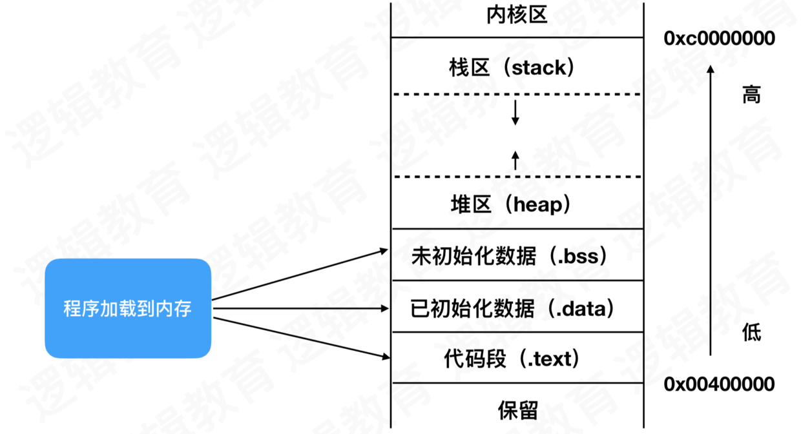

内存管理
内存分布
iOS 中的内存区域从低地址到高地址：.text 段（代码区）、.data 段（已初始化全局变量、静态变量）、.bss 段（未初始化全局变量、静态变量）、堆区、栈区
堆区：
低地址向高地址拓展数据结构，不连续的内存区域，先进先出，由程序员动态分配和释放，通过 alloc 分配的对象
缺点：手动管理，速度慢，容易产生内存碎片
栈区：
高地址向低地址拓展的数据结构，连续内存区域，后进先出，一般运行时分配，编译器自动分配并释放
由编译器自动分配并释放，不会产生内存碎片，速度快，缺点：内存大小限制不灵活
TaggedPointer
普通对象的查找过程：从栈中找到指针，然后去堆中寻找指针对应的内存空间，进而读取值
64 bit 开始，引入了 TaggedPointer 技术，用于优化 NSNumber、NSDate、NSString 等小对象存储
TaggedPointer 通过在其最后一个 bit 位设置一个特殊标记，用于将数据直接保存到指针本身
TaggedPointer 指针的值不再是堆区地址，而是真正的值。所以实际上它不再是一个对象了，内存并不存储在堆中
将对象的指针拆分成两部分，一部分直接保存数据，另一部分作为特殊标记，表示这是一个特殊指针，不指向任何一个地址
- 引入 TaggedPointer 对象之后，64 位 CPU 下 NSNumber 的内存变成这样
- 执行以下代码，有什么区别
1 | dispatch_queue_t queue = dispatch_get_global_queue(0, 0); |
1 | dispatch_queue_t queue = dispatch_get_global_queue(0, 0); |
第一个会 Crash，第二个正常运行
第一个多线程同时访问 name 的 setter 方法，有可能多条线程同时执行 [_name release]，连续 release 两次造成对象的过度释放，导致 Crash
第二个 name 指针为 TaggedPointer 类型，不存在 release 操作
两个 name 的底层类型不一致，第一个 name 类型是 NSCFString 类型，存储在堆上，第二个 name 类型是NSTaggedPointerString 存储在常量区
NSString 对于那些所需内存小于 60 位的字符串，它可以创建一个 TaggedPointer，其余则被放置在真正的 NSString 对象里，这使得常用短字符串的性能得到提升
NONPOINTER_ISA
和 TaggedPointer 设计思想类似，ISA 其实并不单单是一个指针，其中一些位仍旧编码指向对象的类，一部分额外空间存储其它内容
ISA 指针第 1 位表示使用优化的 ISA 指针
64 位架构下，ISA 指针本身占 64 位，64 位存储一个内存地址显然浪费，为了提高内存利用率，剩余比特位中存储了内存管理相关的内容
- nonpointer：表示是否对isa开启指针优化 。0代表是纯isa指针，1代表除了地址外，还包含了类的一些信息、对象的引用计数等
- has_assoc：关联对象标志位
- 该对象是否有C++或Objc的析构器，如果有析构函数，则需要做一些析构的逻辑处理，如果没有，则可以更快的释放对象
- shiftcls：存在类指针的值，开启指针优化的情况下，arm64位中有33位来存储类的指针
- magic：判断当前对象是真的对象还是一段没有初始化的空间
- weakly_referenced：是否被指向或者曾经指向一个ARC的弱变量，没有弱引用的对象释放的更快
- deallocating：是否正在释放
- has_sidetable_rc：当对象引用计数大于10时，则需要进位
- extra_rc：表示该对象的引用计数值，实际上是引用计数减一。例如：如果引用计数为10，那么extra_rc为9。如果引用计数大于10，则需要使用has_sidetable_rc
散列表
当引用计数存储到一定值，并不会存储到 Nonpointer_isa 位域的 extra_rc 中，而是会存储到 SideTable 散列表中
在 runtime 内存空间中，SideTable 是一个 hash 数组，里面存储了 SideTable
SideTable 的 hash 键就是一个对象 obj 的 address，因此可以说，一个 obj，对应了一个 SideTable，但一个 SideTable 会对应多个 obj，因为SideTable 的数量有限，所有会有很多 obj 公用一个 SideTable
SideTable结构中包含了自旋锁、引用计数表、弱引用表
1 | struct SideTable { |
- 为什么不直接用一张SideTable，而是用SideTables去管理多个 SideTable
SideTable 里有一个自旋锁，如果把所有的类都放在同一个 SideTable，有任何一个类有改动都会对整个 table 做操作，并且在操作一个类的同时，操作别的类会被锁住等待，这样会导致操作效率和查询效率都很低。而有多个SideTable 的话，操作的都是单个 Table，并不会影响其他的 table，这就是分离锁
retain
retain 底层先判断是否是 Nonpointer_isa，如果不是，则直接操作散列表进行 +1 操作
如果是 Nonpointer_isa，extra_rc 引用计数+1，extra_rc只有8位，如果出现上溢出，需要借助散列表存储，一半存储在散列表中，另一半还是存储在 extra_rc 中
release
release 底层先判断是否是 Nonpointer_isa，如果不是，则直接操作散列表进行 -1 操作
如果是 Nonpointer_isa，extra_rc 引用计数-1，如果引用计数出现下溢出，看散列表中是否存储引用计数，从散列表中取一半进行 -1 操作，然后存储到 extra_rc 中，如果还是下溢出，就调用 dealloc